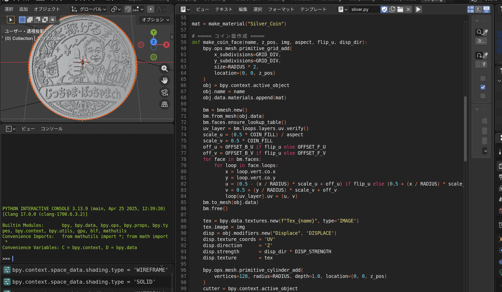

Knowledge Share #03
AIに「完成形」ではなく
「素材」を作らせよう
素材化・資産化の発想でAI活用の幅を広げる
発表者名
2026.04.08
1 / 24
現状のAI活用は"完成形まで持っていく"使い方が多い
完成形を伝えて、そのまま作らせることが多い
自動添削
普段の修正依頼のような形でそのまま出力させる
イラスト・インフォグラフィック生成
説明文から図解・画像を直接作らせる
「完成形以外の使い方があるのでは？」と思ったきっかけ
YouTubeのShort動画「プッカ」さんを見ていた
3Dプリンターで日常の不便を解決する動画を投稿
youtube.com/@PukkaJapan/shorts
youtube.com/@PukkaJapan/shorts
案件動画で「写真からAIでモデリングできるツール」を紹介
写真1枚から3Dモデルが作れる技術を見た
「これ、別の面白い使い方ができるのでは？」とひらめいた

素材づくりの話とつながった
今、AIでChフォーマットの素材づくりを考えている段階
前林さんに提案いただきながら徐々に進めているところ
その中で気づいたこと
「編集そのもの（アニメーション）」ではなく
「編集に使える素材」をAIで作る方がよいのでは？
「編集に使える素材」をAIで作る方がよいのでは？
PROBLEM
AIにそのままアニメーションを作らせると
課題がある
課題がある
細かいニュアンスが伝わりにくい・モデル崩れ・単純な動きになりやすい
オリジナリティが出しにくい → 完成形をそのまま作らせる方法には限界がある
オリジナリティが出しにくい → 完成形をそのまま作らせる方法には限界がある
発想の転換
アニメーションを完成させる
完成品を
一発で作らせる
一発で作らせる
→
アニメーション用の素材を1つずつ作る
素材を分解して
作る発想へ
作る発想へ
やることは大きく2つ
① 3Dモデル・素材を作る
キャラクター・モノ・3Dモデルを生成
素材として流用できる
→ 資産になる
② アニメーションさせる
作ったモデルに動きをつける
動きはコードで細かく指定できる
→ 高校時代ゲーム制作で経験あり
PROBLEM
ただし、ここで問題になるのが2点
① キャラクター・3Dモデルの精度
② アニメーションを作る難易度
→ ここをどう解決するかがポイント
② アニメーションを作る難易度
→ ここをどう解決するかがポイント
Claude Codeは"生成そのもの"より"コード生成"が強い
画像・動画の直接生成は意図を細かく読み取れないことがある
コーディングはかなり強い
特にPythonなどのコード生成が得意
コードから操作できるツール・ソフトを使えば強い
# Claude Code
def make_model():
"3Dモデル生成"
return code
# → Blenderで実行
def make_model():
"3Dモデル生成"
return code
# → Blenderで実行
考え方のポイント
AIにお願いするのは「完成品」ではなく
「コード生成」
「コード生成」
生成したコードを、別のツールやソフトで使う
→ AI活用の幅がかなり広がる
→ AI活用の幅がかなり広がる
実際に3Dモデルを作ってみた
AIモデリングツールを使う方法もある
Blender内で作れる形にできると判断
AIにコードを書かせて、モデル作成を試した
手順① ― 白黒の濃淡イラストを用意する
Nanobananaなどのツールで作成可能
白黒の濃淡に分けることで、立体化しやすい状態になる
立体化しやすい状態にするための下準備
濃淡＝奥行き・高低の情報になる
手順① ― 用意した素材（表・裏）
表

裏

手順② ― 画像からClaude CodeでBlender用コードを生成
Blenderで動かせるコードを生成する
「この画像をBlenderで3D化するコードを書いて」と伝えるだけ
画像をもとに立体化のベースを作る
白黒の濃淡情報を高さデータとして解釈させる
手順③ ― Blenderで確認・微調整してモデル完成
Blenderで実際に動かして確認する
細かい調整はClaude内で修正 or 手作業
どちらの方法でも対応できる
この3ステップでモデル完成
手順③ ― AI生成結果（じっちゃまモデル）

動きもBlender内で作れる
「どう動かしたいか」を日本語で伝えるだけ
「左から右にフワっと飛んでくる動きを作って」など
その内容をもとにBlender用コードを生成してくれる
モデル作成だけでなくアニメーション化も進めやすい
実際の動き ― drop アニメーション
この方法の良さ
一度作ったものが
その場限りで終わらない
その場限りで終わらない
別モデルに同じ動きを使える
同じモデルに別の動きをつけられる
つまり → 素材として残る / 資産になる
3Dモデルはアニメーション以外にも使える
動画素材として使える
他のモデルへの流用ができる
3Dプリントにも使える
データをそのまま出力できる
今回伝えたかったこと ①
AIに完成形だけを求めない方がいい場合がある
素材として残る形で作った方が後から流用しやすい
結果として残せるものが多くなる
今回伝えたかったこと ②
Cursor / Claude Code内で完結しなくてもよい
Pythonなどのコードで使えるツール・ソフトは多い
AIにはコード生成だけお願いして実行・調整は別ソフトで行う
→ できることの幅がかなり広がる
まとめ
AIは完成品を作るためだけに使うものではない
素材を作らせる使い方もかなり強い
モデルと動きを分けると再利用しやすい
Claude Codeはコード生成を軸に使うと特に強い
使う場所を変えるだけでAI活用の幅は広がる
素材化の
発想で
やってみよう
発想で
やってみよう
CLOSING
Claude Codeをある程度使っている人なら
十分試せる内容です
十分試せる内容です
完成形を作らせる以外の使い方もある
素材化の発想で、AI活用の可能性は広がる
素材化の発想で、AI活用の可能性は広がる
トークン削減にもなるし、資産を残す意味でもやってみませんか？